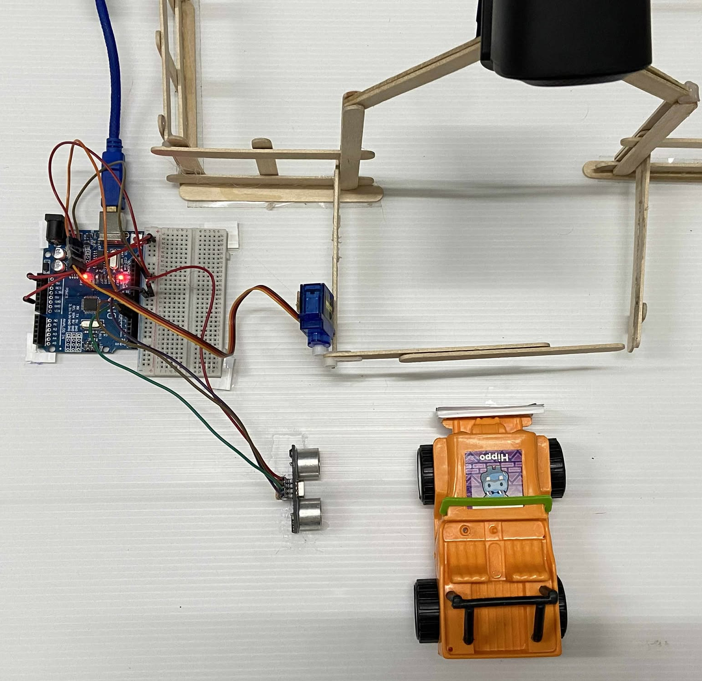
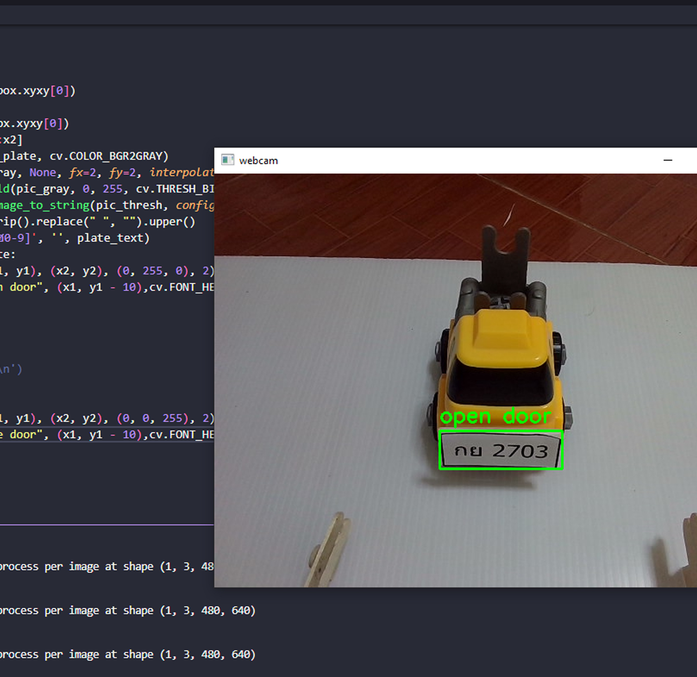

รวมผลงานเกี่ยวกับโครงงานคอมพิวเตอร์


รวมผลงานเกี่ยวกับโครงงานคอมพิวเตอร์
โครงงานคอมพิวเตอร์และฟิสิกส์ร่วมกับบอร์ด Arduino
 โครงงาน : ระบบเปิดประตูรั้วอัตโนมัติผ่านป้ายทะเบียนรถ
หลักการ : เริ่มจากมีรถเข้ามาจอดตรงรั้วบ้าน เราจะใช้webcam ในการจับภาพ จากนั้นนำภาพมาประมวลผล ซึ่งเราจะทำการ เทรน AI ไว้โดยผมจะใช้เป็น Yolo v8 เพื่อทำให้ AI รู้ว่าส่วนไหนคือป้ายทะเบียน และเราจะทำการใช้ Open cv ในการครอปส่วนนั้นออกมาเพื่อนนำไปถอดรหัสป้ายทะเบียนโดยผมจะใช้เป็นตัว Teseract ORC ในการดึงข้อความออกมาจากภาพ ต่อจากนั้นผมจะนำ string ไปเทียบกับรหัสป้ายทะเบียนที่อนุญาติให้เปิดรั้ว ซึ่งถ้าตรงกันเราจะส่งสัญญาณไปที่ Arduino IDE เพื่อสั่งควบคุมการใช้ Servo motor ต่อและมีกลไก Sensor นิดหน่อยเพื่อกันไม่ให้ประตูรั้วเปิดก่อนที่รถจะมาถึงและกันไม่ให้รั้วปิดประตูทับรถขณะเข้าบ้าน
สิ่งที่ได้รับ
1.) ได้ประสบการณ์ทักษะการเขียนโค้ดภาษา python และการเขียนโค้ด Arduino
2.) ได้ฝึกทักษะและเข้าใจในเรื่อง Ai มากขึ้นการเทรน ai การ lable อะไรต่างๆ
3.) ได้ทักษะการประยุกต์ ai + python + arduino เข้าด้วยกัน
4.) ได้นำความรู้ด้านฟิสิกส์มาต่อยอดเป็นโครงงานคอมพิวเตอร์
วิดีโอการทดลอง Test!!
ผ่านการคัดเลือกเข้าค่าย Ai Inovator
โครงการ : The AI Innovators Project เป็นโครงการสำหรับครูและนักเรียนระดับมัธยมศึกษาตอนปลาย เพื่อการให้องค์ความรู้ทั้งด้าน คณิตศาสตร์ วิทยาการคอมพิวเตอร์ และปัญญาประดิษฐ์ ร่วมกับ การสร้างแนวคิดเชิงนวัตกรรม สร้างแรงบันดาลใจ เพื่อการบ่มเพาะเยาวชน ให้มุ่งสู่การเป็นนวัตกรที่เกี่ยวข้องกับเทคโนโลยีด้านปัญญาประดิษฐ์ เพื่อเป็นทรัพยากรบุคคลที่สำคัญของประเทศต่อไปในอนาคต
เรื่องราว
เป็นค่ายที่ผมตั้งใจจะไปสอบเพราะผมสนใจด้าน AI แต่ค่าบนี้ต้องคัดเลือกเพื่อเข้าไปโดยจะสอบด้าน คณิตศาสตร์ และ คอมพิวเตอร์ คัดนักเรียนจากทั่วประเทศผมสามารถผ่านเข้าไปได้และได้รับทักษะหลายๆอย่างทั้งการทำงานทีม ความรู้เเกี่ยวกับ Deeplearning การเทรน Model การ Picthing นำเสอนโครงงาน และได้รับประสบการณ์อีกหลายๆอย่าง
สิ่งที่ได้รับที่ประทับใจ
1.) ผมได้ความรู้ทางด้าน Mechine Learning เป็นอย่างมาก
2.) ทำให้ผมนั้นพอเข้าใจ Deeplearning และเริ่มสนใจและศึกษา
3.) ได้ทัษะการ Train Model กลับมาใช้ในโครงงานต่างๆ

4.) รู้จักกับ Neural Network และทำให้ผมได้กลับมาศึกษาต่อ